Flatmap tracing review
Source image, saved anatomical outlines and scale endpoints. Unfinished fields are NA.
fig04A_normal_mouse — illustrative summary; not an independent animal
Provisional digitization; inspect anatomical boundaries.
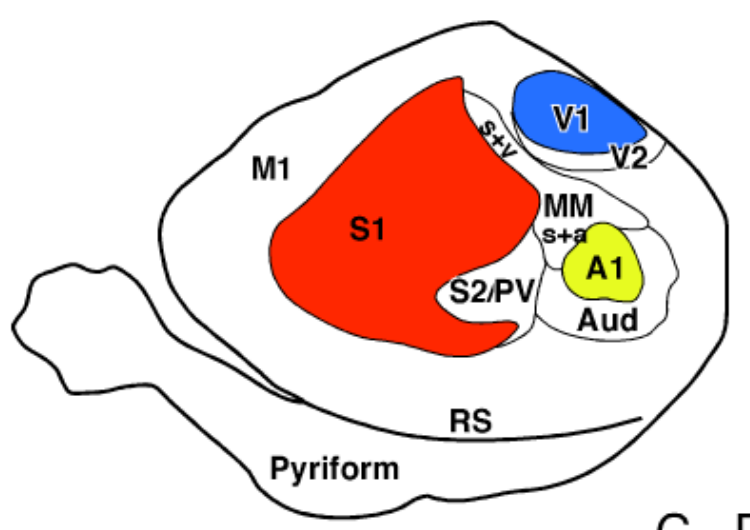

ImageJ ROIs · Calibrated TIFF
| Field | mm² | % neocortex | Status |
|---|
| S1 | NA | NA | provisional; anatomical review required |
| V1 | NA | NA | provisional; anatomical review required |
| A1 | NA | NA | provisional; anatomical review required |
| V2 | NA | NA | provisional; anatomical review required |
| S2/PV | NA | NA | provisional; anatomical review required |
| auditory_domain_including_A1 | NA | NA | provisional; anatomical review required |
| M1; MM; S+V; RS | NA | NA | not_measurable |
fig04B_COUPTFI_mouse — illustrative summary; not an independent animal
Provisional digitization; inspect anatomical boundaries.
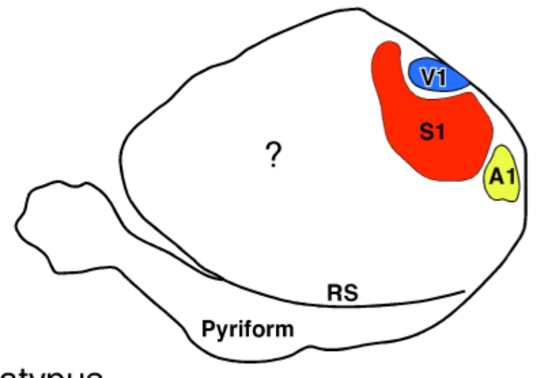

ImageJ ROIs · Calibrated TIFF
| Field | mm² | % neocortex | Status |
|---|
| S1 | NA | NA | provisional; anatomical review required |
| V1 | NA | NA | provisional; anatomical review required |
| A1 | NA | NA | provisional; anatomical review required |
| unassigned rostral cortex; RS | NA | NA | not_measurable |
fig04C_platypus — illustrative summary; not an independent animal
Provisional digitization; inspect anatomical boundaries.
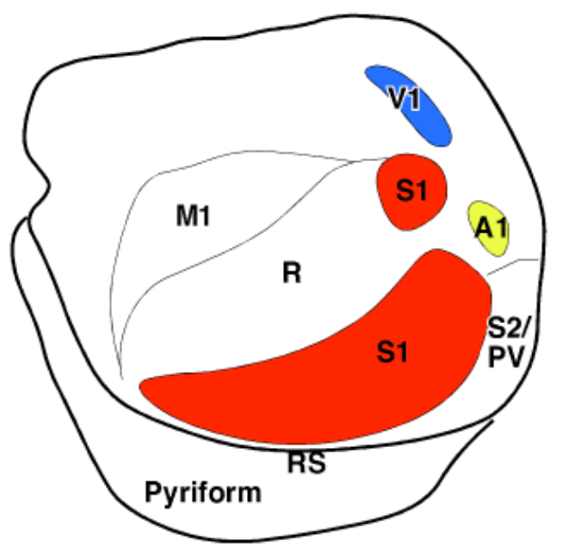

ImageJ ROIs · Calibrated TIFF
| Field | mm² | % neocortex | Status |
|---|
| S1_large | NA | NA | provisional; anatomical review required |
| S1_small | NA | NA | provisional; anatomical review required |
| V1 | NA | NA | provisional; anatomical review required |
| A1 | NA | NA | provisional; anatomical review required |
| M1 | NA | NA | provisional; anatomical review required |
| S2/PV; RS | NA | NA | not_measurable |
| R | NA | NA | not_measurable |
fig04D_normal_opossum — illustrative summary; not an independent animal
Provisional digitization; inspect anatomical boundaries.
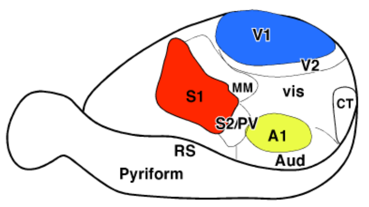

ImageJ ROIs · Calibrated TIFF
| Field | mm² | % neocortex | Status |
|---|
| S1 | NA | NA | provisional; anatomical review required |
| V1 | NA | NA | provisional; anatomical review required |
| A1 | NA | NA | provisional; anatomical review required |
| V2 | NA | NA | provisional; anatomical review required |
| CT | NA | NA | provisional; anatomical review required |
| S2/PV | NA | NA | provisional; anatomical review required |
| RS | NA | NA | not_measurable |
| MM | NA | NA | not_measurable |
| vis | NA | NA | not_measurable |
| auditory_domain_including_A1 | NA | NA | not_measurable |
fig04E_enucleated_opossum — illustrative summary; not an independent animal
Provisional digitization; inspect anatomical boundaries.
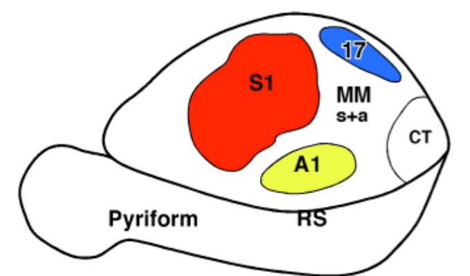

ImageJ ROIs · Calibrated TIFF
| Field | mm² | % neocortex | Status |
|---|
| S1 | NA | NA | provisional; anatomical review required |
| area17 | NA | NA | provisional; anatomical review required |
| A1 | NA | NA | provisional; anatomical review required |
| CT | NA | NA | provisional; anatomical review required |
| MM; RS | NA | NA | not_measurable |
fig05A_wildtype_mouse — illustrative summary; not an independent animal
Provisional digitization; inspect anatomical boundaries.
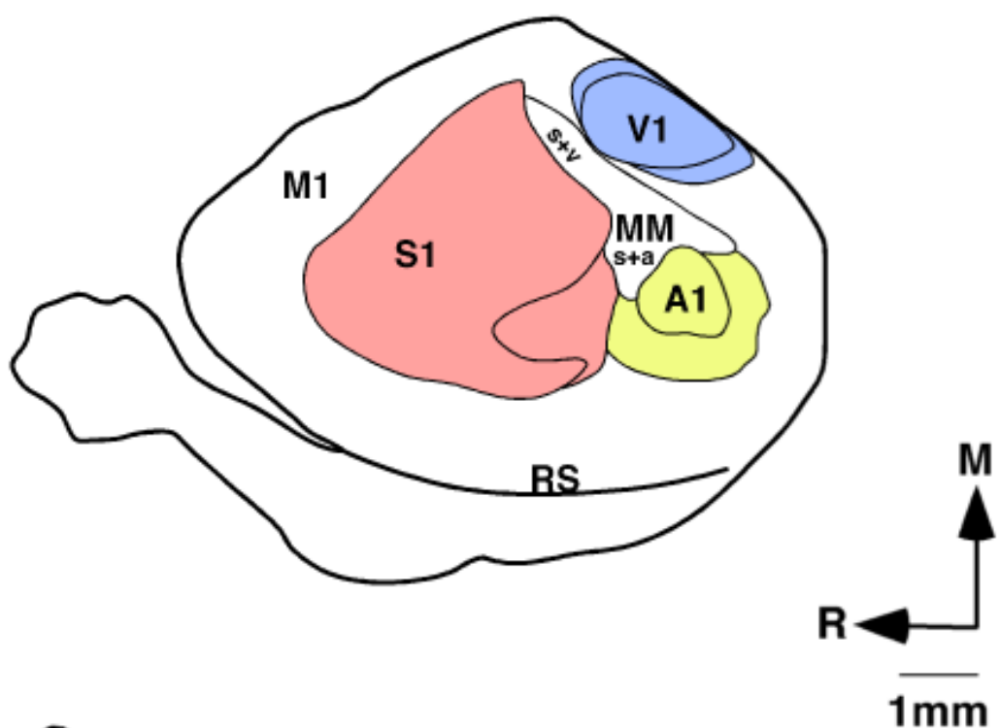

ImageJ ROIs · Calibrated TIFF
| Field | mm² | % neocortex | Status |
|---|
| S1 | 8.976 | NA | provisional; anatomical review required |
| V1 | 1.460 | NA | provisional; anatomical review required |
| A1 | 0.879 | NA | provisional; anatomical review required |
| auditory_domain_including_A1 | 2.260 | NA | provisional; anatomical review required |
| S2 | 1.143 | NA | provisional; anatomical review required |
| M1; MM; RS | NA | NA | not_measurable |
fig05B_deaf_mouse — illustrative summary; not an independent animal
Provisional digitization; inspect anatomical boundaries.
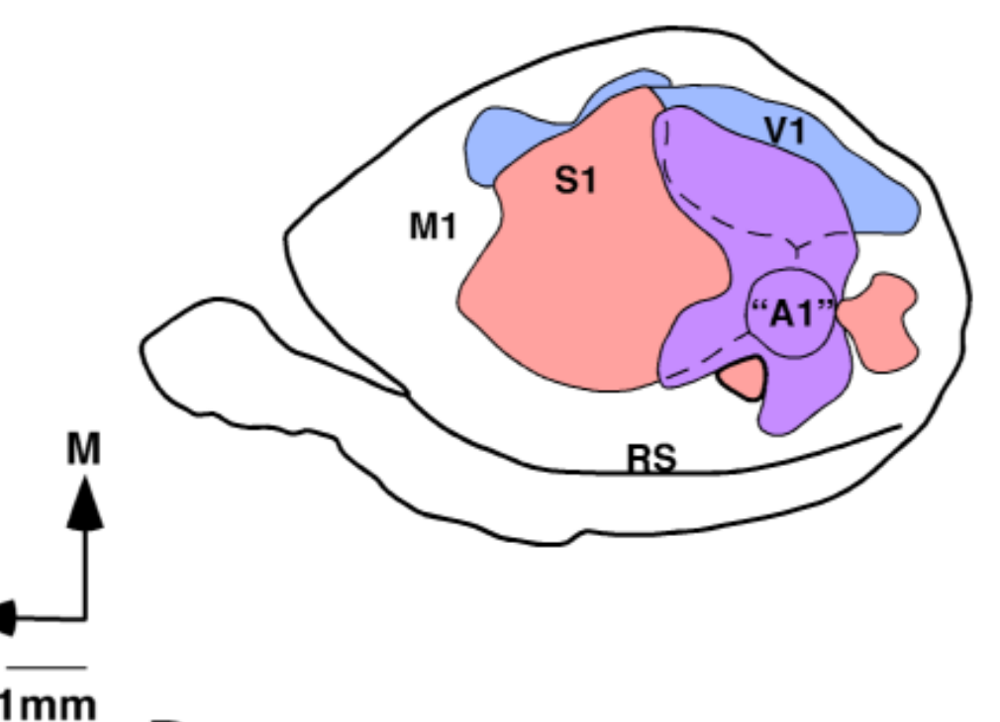

ImageJ ROIs · Calibrated TIFF
| Field | mm² | % neocortex | Status |
|---|
| S1 | 7.574 | NA | provisional; anatomical review required |
| V1 | 1.445 | NA | provisional; anatomical review required |
| A1 | 0.815 | NA | provisional; anatomical review required |
| multimodal_domain_including_A1 | 5.740 | NA | provisional; anatomical review required |
| M1; MM; RS | NA | NA | not_measurable |
fig05C_normal_opossum — illustrative summary; not an independent animal
Provisional digitization; inspect anatomical boundaries.
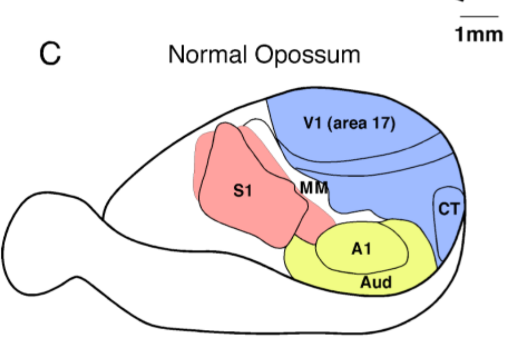

ImageJ ROIs · Calibrated TIFF
| Field | mm² | % neocortex | Status |
|---|
| S1 | 5.069 | NA | provisional; anatomical review required |
| V1 | 6.100 | NA | provisional; anatomical review required |
| V2 | 1.576 | NA | provisional; anatomical review required |
| vis | 3.735 | NA | provisional; anatomical review required |
| CT | 0.973 | NA | provisional; anatomical review required |
| A1 | 2.472 | NA | provisional; anatomical review required |
| auditory_domain_including_A1 | 5.454 | NA | provisional; anatomical review required |
| S2 | 0.575 | NA | provisional; anatomical review required |
| M1; MM; RS | NA | NA | not_measurable |
fig05D_enucleated_opossum — illustrative summary; not an independent animal
Provisional digitization; inspect anatomical boundaries.
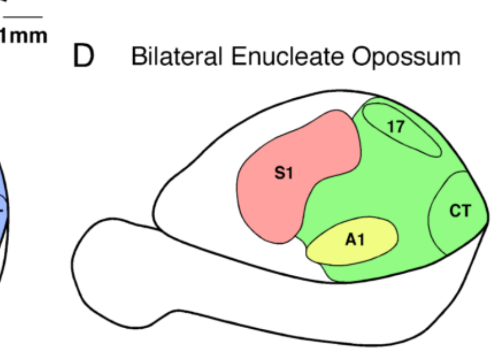

ImageJ ROIs · Calibrated TIFF
| Field | mm² | % neocortex | Status |
|---|
| S1 | 5.838 | NA | provisional; anatomical review required |
| area17 | 1.032 | NA | provisional; anatomical review required |
| A1 | 1.903 | NA | provisional; anatomical review required |
| CT | 2.004 | NA | provisional; anatomical review required |
| multimodal_domain_including_area17_CT | 11.062 | NA | provisional; anatomical review required |
| M1; MM; RS | NA | NA | not_measurable |
fig07_macaque — illustrative summary; not an independent animal
Provisional digitization; inspect anatomical boundaries.
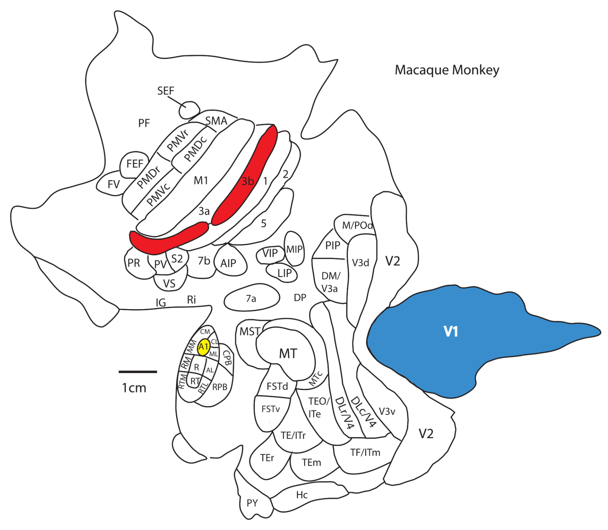

ImageJ ROIs · Calibrated TIFF
| Field | mm² | % neocortex | Status |
|---|
| 3b | 174.346 | NA | provisional; anatomical review required |
| V1 | 989.264 | NA | provisional; anatomical review required |
| A1 | 8.805 | NA | provisional; anatomical review required |
| M1 | 275.924 | NA | provisional; anatomical review required |
| 3a | 119.753 | NA | provisional; anatomical review required |
| 1 | 123.023 | NA | provisional; anatomical review required |
| 2 | 76.229 | NA | provisional; anatomical review required |
| 5 | 93.896 | NA | provisional; anatomical review required |
| FEF | 35.938 | NA | provisional; anatomical review required |
| FV | 36.773 | NA | provisional; anatomical review required |
| PMVr | 54.853 | NA | provisional; anatomical review required |
| PMDr | 86.762 | NA | provisional; anatomical review required |
| PMDc | 81.346 | NA | provisional; anatomical review required |
| PMVc | 50.946 | NA | provisional; anatomical review required |
| SMA | 30.056 | NA | provisional; anatomical review required |
| SEF | 14.952 | NA | provisional; anatomical review required |
| PR | 40.834 | NA | provisional; anatomical review required |
| PV | 9.112 | NA | provisional; anatomical review required |
| S2 | 22.837 | NA | provisional; anatomical review required |
| VS | 30.389 | NA | provisional; anatomical review required |
| 7b | 53.424 | NA | provisional; anatomical review required |
| AIP | 47.832 | NA | provisional; anatomical review required |
| 7a | 72.612 | NA | provisional; anatomical review required |
| VIP | 20.430 | NA | provisional; anatomical review required |
| MIP | 28.428 | NA | provisional; anatomical review required |
| LIP | 24.985 | NA | provisional; anatomical review required |
| PIP | 50.871 | NA | provisional; anatomical review required |
| M/POd | 56.953 | NA | provisional; anatomical review required |
| DM/V3a | 86.534 | NA | provisional; anatomical review required |
| V3d | 130.217 | NA | provisional; anatomical review required |
| V2 | 637.887 | NA | provisional; anatomical review required |
| MT | 145.603 | NA | provisional; anatomical review required |
| MST | 59.906 | NA | provisional; anatomical review required |
| MTc | 67.173 | NA | provisional; anatomical review required |
| FSTd | 54.344 | NA | provisional; anatomical review required |
| FSTv | 63.575 | NA | provisional; anatomical review required |
| TEO/ITe | 107.627 | NA | provisional; anatomical review required |
| TE/ITr | 102.184 | NA | provisional; anatomical review required |
| TEr | 71.458 | NA | provisional; anatomical review required |
| TEm | 84.394 | NA | provisional; anatomical review required |
| TF/ITm | 121.562 | NA | provisional; anatomical review required |
| DLr/V4 | 132.354 | NA | provisional; anatomical review required |
| DLc/V4 | 163.868 | NA | provisional; anatomical review required |
| V3v | 115.231 | NA | provisional; anatomical review required |
| CM_MM_combined | 12.195 | NA | provisional; anatomical review required |
| ML | 2.041 | NA | provisional; anatomical review required |
| CL | 1.066 | NA | provisional; anatomical review required |
| CPB | 12.477 | NA | provisional; anatomical review required |
| RPB | 50.524 | NA | provisional; anatomical review required |
| AL | 10.644 | NA | provisional; anatomical review required |
| R | 14.383 | NA | provisional; anatomical review required |
| RT | 6.870 | NA | provisional; anatomical review required |
| RM | 2.436 | NA | provisional; anatomical review required |
| RTM | 21.478 | NA | provisional; anatomical review required |
| PF; IG; Ri; DP | NA | NA | not_measurable |
| PY; Hc | NA | NA | not_measurable |
| CM; MM separately | NA | NA | not_measurable |
fig07_mouse — illustrative summary; not an independent animal
Provisional digitization; inspect anatomical boundaries.
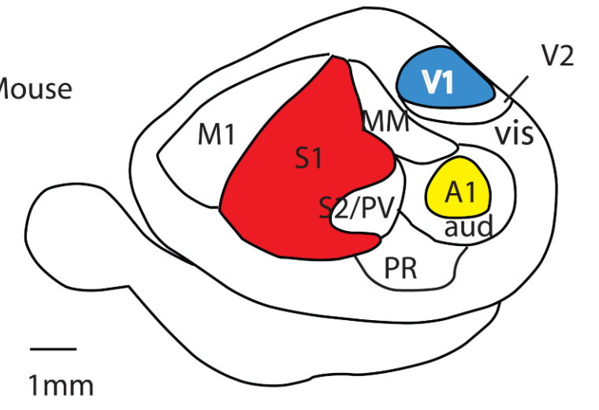

ImageJ ROIs · Calibrated TIFF
| Field | mm² | % neocortex | Status |
|---|
| S1 | 9.247 | NA | provisional; anatomical review required |
| V1 | 1.849 | NA | provisional; anatomical review required |
| A1 | 1.286 | NA | provisional; anatomical review required |
| M1 | 4.301 | NA | provisional; anatomical review required |
| MM | 1.467 | NA | provisional; anatomical review required |
| S2/PV | 0.983 | NA | provisional; anatomical review required |
| V2 | 0.551 | NA | provisional; anatomical review required |
| auditory_domain_including_A1 | 3.187 | NA | provisional; anatomical review required |
| PR | 2.066 | NA | provisional; anatomical review required |
| vis | NA | NA | not_measurable |
All-figure source assessment
Krubitzer_2009: 9 numbered figures assessed; 109 field/fragment measurements. Saved observations, where present, are provisional. No certified complete-neocortex denominator is available.
Figure inventory · Methods and limits · Measurements · Complete-field absolute-area summary
Figure 1 all — assessed_excluded
source_figure_assessment. Phylogenetic diagram with folded/lateral brain silhouettes; projected regions and hidden cortex do not define flatmap surface area.
PDF page19; review preview only.
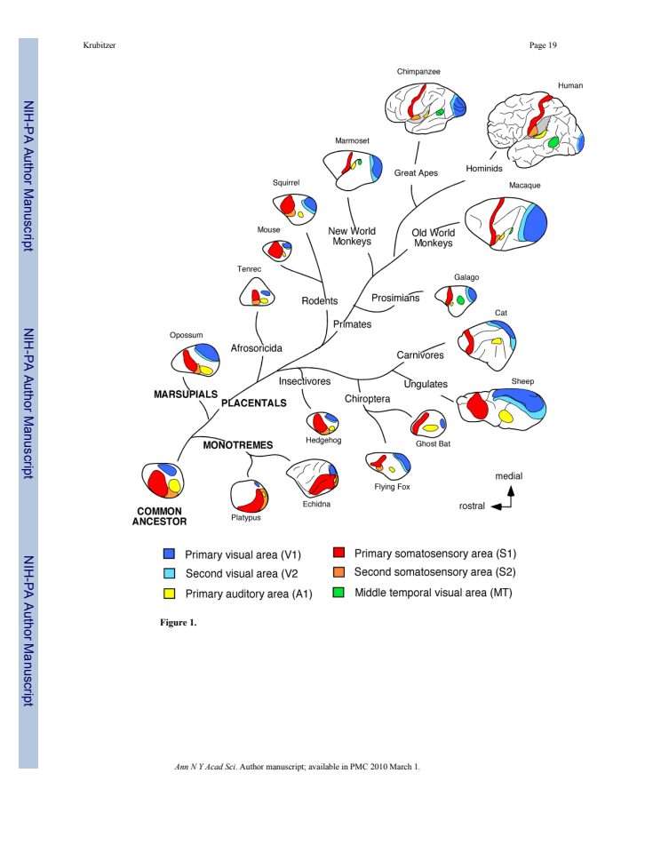
Figure 2 all — assessed_excluded
source_figure_assessment. Connectivity network, not spatial cortical geometry.
PDF page20; review preview only.
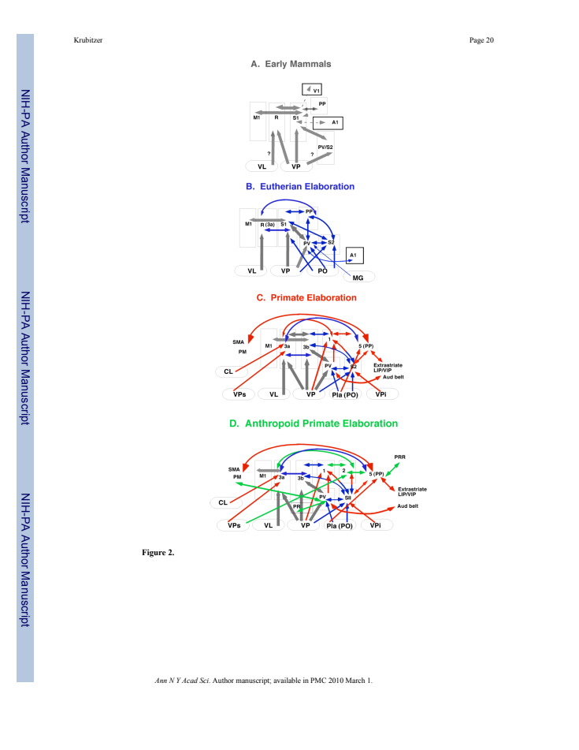
Figure 3 all — assessed_excluded
source_figure_assessment. Limb/embryonic gene-expression illustration; no cortical field map.
PDF page21; review preview only.
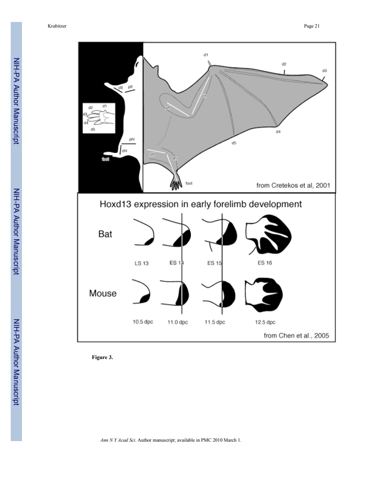
Figure 4 all — digitized_provisional
source_figure_assessment. 5 measured view(s), 24 field/component observations; 0 boundaries remain NA for anatomical review. Illustrative, partial, repeated and unscaled restrictions apply.
Main maps: fig04A_normal_mouse;fig04B_COUPTFI_mouse;fig04C_platypus;fig04D_normal_opossum;fig04E_enucleated_opossum
PDF page22; review preview only.
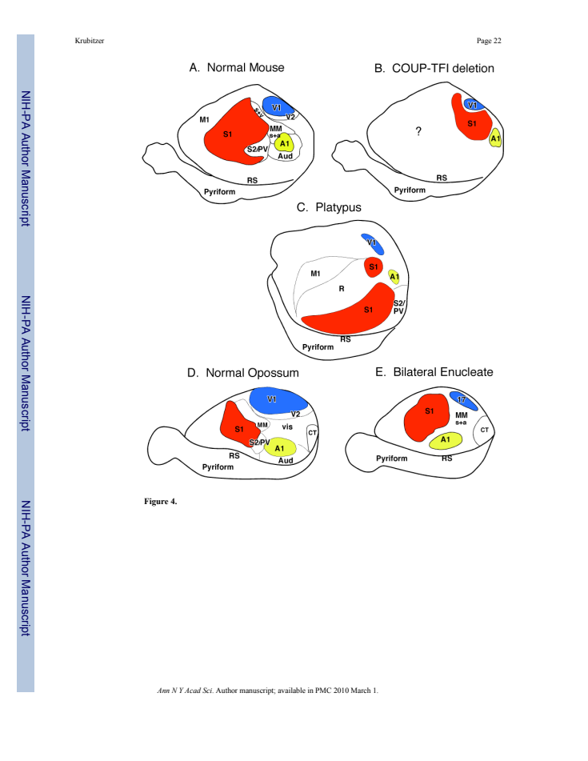
Figure 5 all — digitized_provisional
source_figure_assessment. 4 measured view(s), 22 field/component observations; 0 boundaries remain NA for anatomical review. Illustrative, partial, repeated and unscaled restrictions apply.
Main maps: fig05A_wildtype_mouse;fig05B_deaf_mouse;fig05C_normal_opossum;fig05D_enucleated_opossum
PDF page23; review preview only.
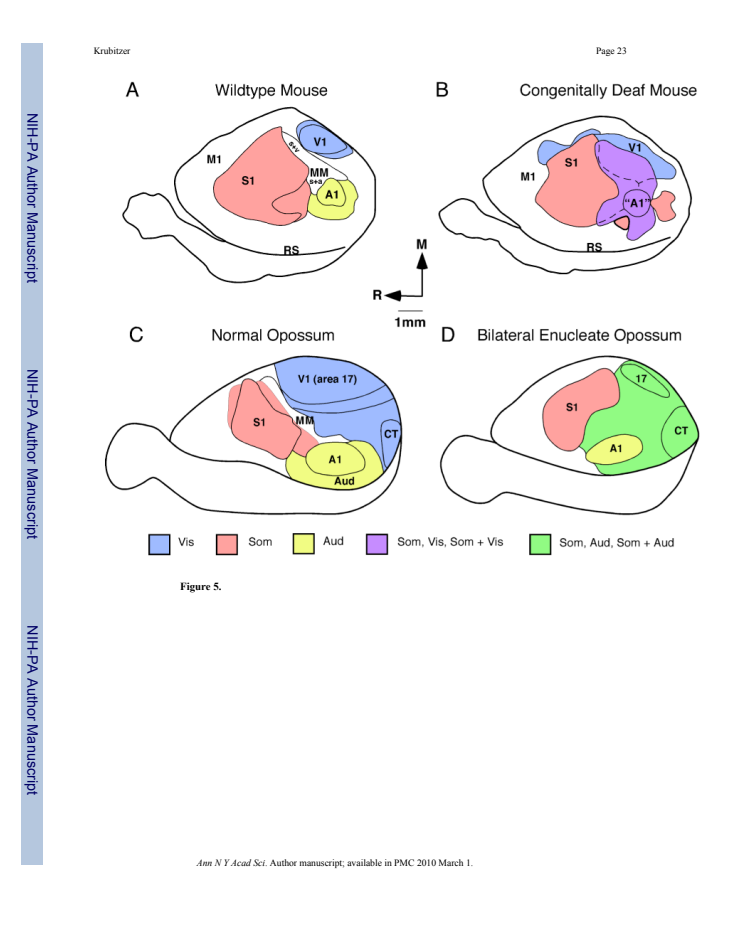
Figure 6 all — assessed_excluded
source_figure_assessment. Folded brain external views; buried cortex is not represented.
PDF page24; review preview only.
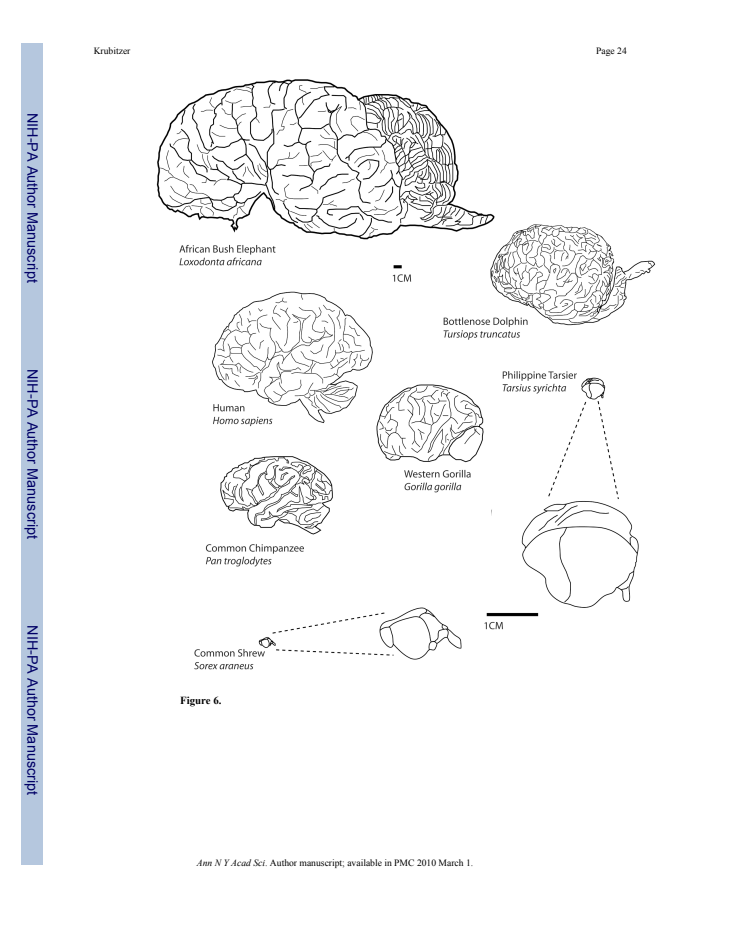
Figure 7 all — digitized_provisional
source_figure_assessment. 2 measured view(s), 63 field/component observations; 0 boundaries remain NA for anatomical review. Illustrative, partial, repeated and unscaled restrictions apply.
Main maps: fig07_macaque;fig07_mouse
PDF page25; review preview only.
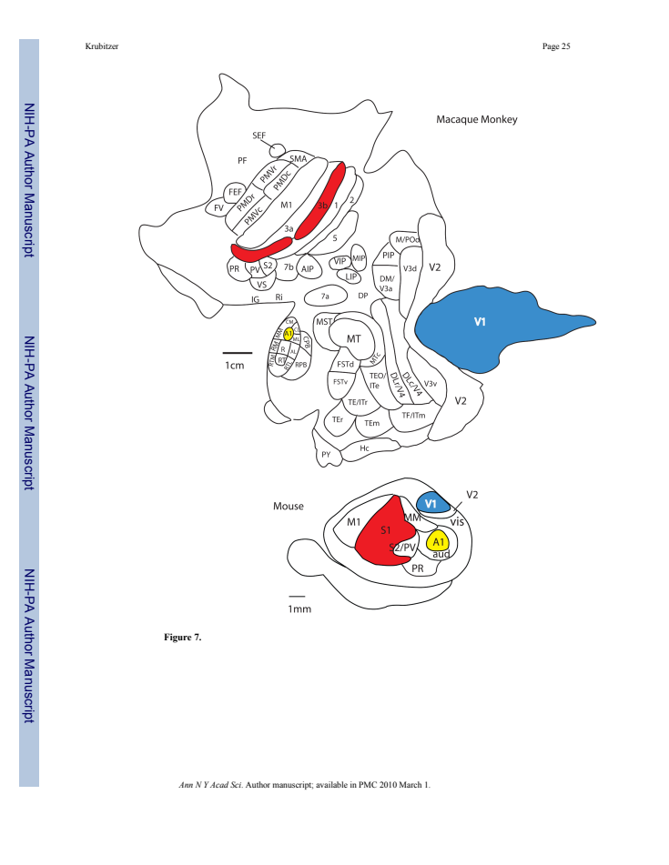
Figure 8 all — assessed_excluded
source_figure_assessment. Phylogeny and folded/parietal surface views; no complete planar field envelope.
PDF page26; review preview only.
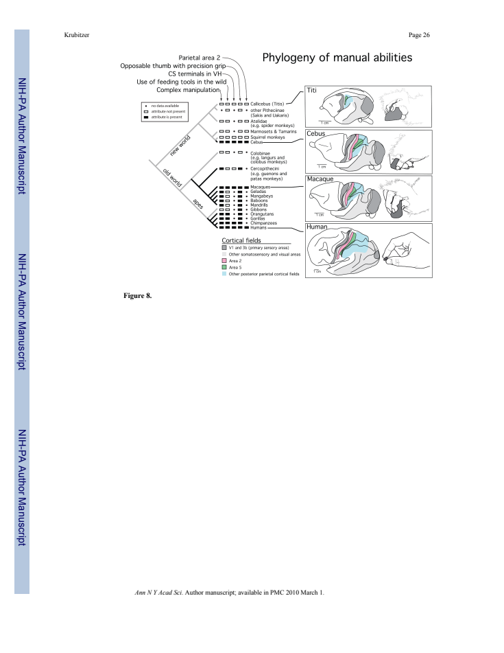
Figure 9 all — assessed_excluded
source_figure_assessment. Brain silhouettes and cellular module arrays; no full cortical field borders.
PDF page27; review preview only.
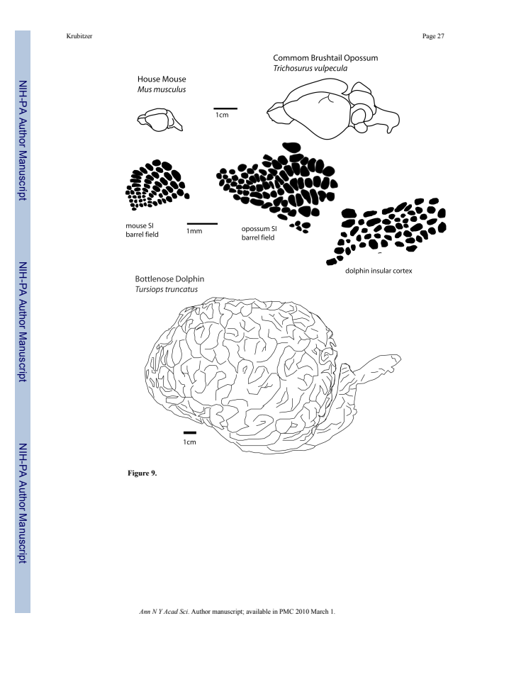
Enlarged source-toggle precision review
Second precision pass: source/before/after comparisons and remaining limitations